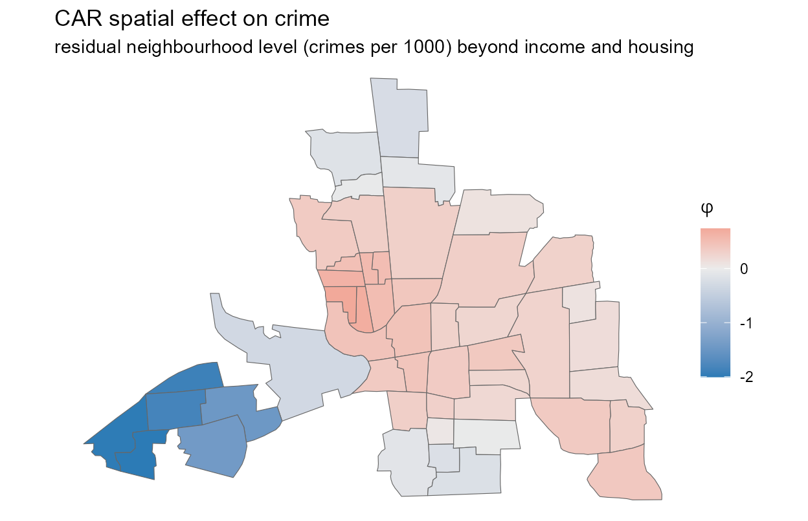
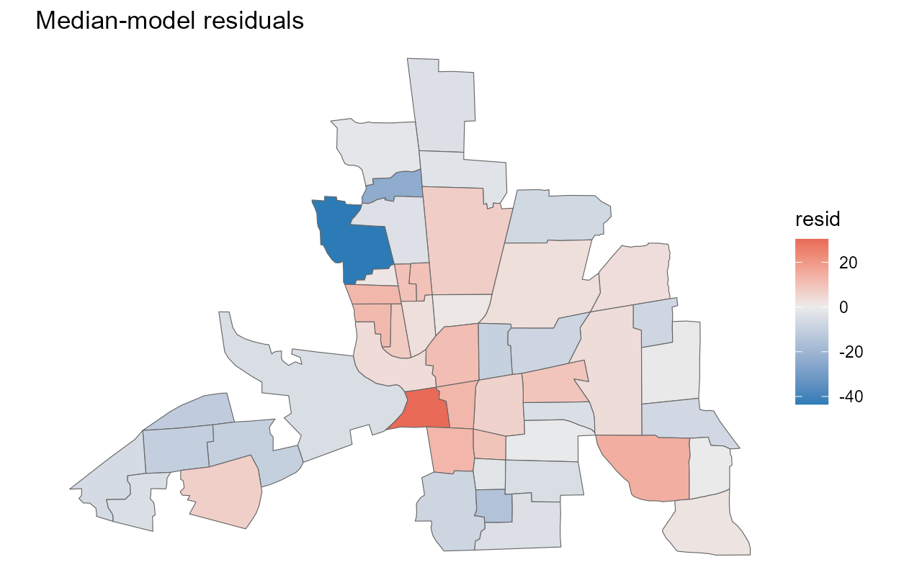
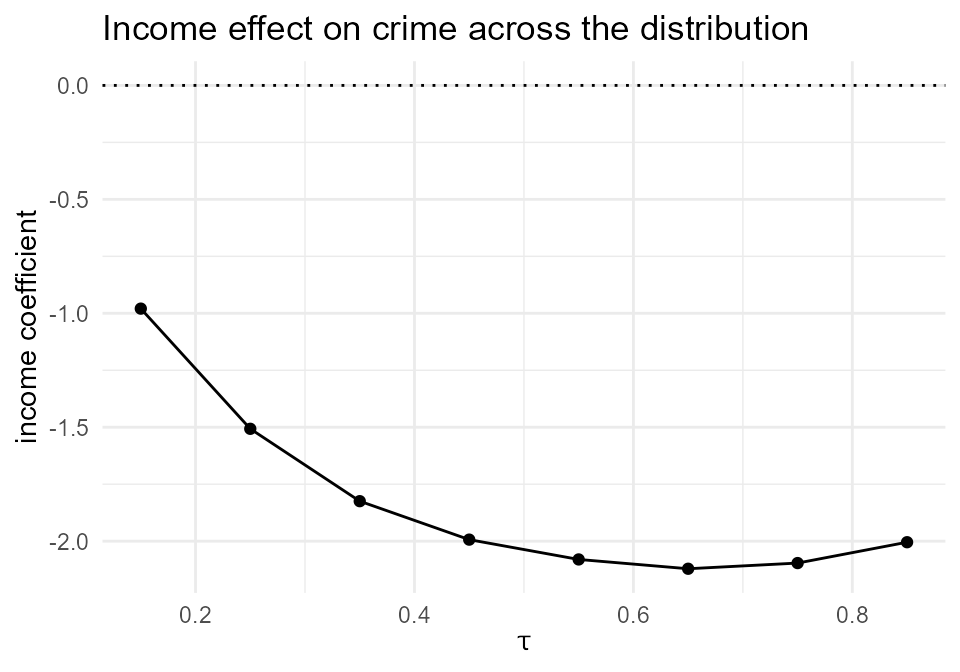
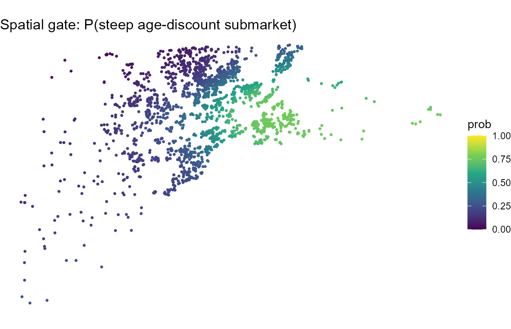
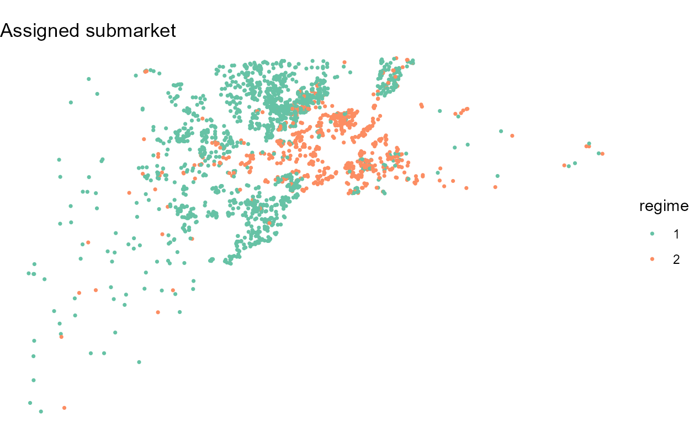
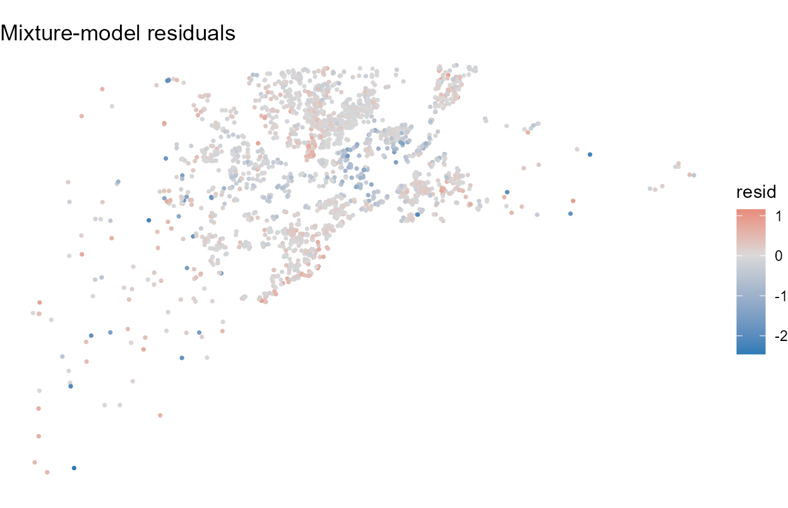

A primer on spatial quantile regression with autocorrelation
Source:vignettes/spmixqr-primer.Rmd
spmixqr-primer.RmdThis primer is for a researcher with areal spatial data (regions, neighbourhoods, census tracts) who wants to know how covariates move the tails of an outcome, not just its mean, while neighbouring units are spatially dependent. We work the Columbus, Ohio neighbourhood-crime dataset from start to finish, in two examples:
- Example A — a single-population spatial-error (CAR) quantile regression: build the weights, fit, read the coefficients across the distribution, and absorb the residual spatial autocorrelation.
- Example B — a two-regime mixture of quantile regressions on a larger dataset (Lucas County, Ohio house sales): uncover latent housing submarkets with a spatial gate and map them.
In Example A we start from a shapefile, read it as
an sf map, and put the estimates and residuals back on the
map as choropleths alongside the tables; Example B does the same on
point geometry. A mixture needs more units than the 49 Columbus
neighbourhoods, which is why it uses the larger housing data.
1. The question
The 49 Columbus neighbourhoods differ sharply in residential crime. Two questions an ordinary (mean) regression cannot answer:
- Does household income protect against crime equally across the distribution, or does it matter more in the high-crime neighbourhoods (the upper tail)?
- After income and housing value are accounted for, do neighbouring areas still have correlated crime, a spatial spillover the model is missing, and can we absorb it?
The spatial-error (CAR) quantile regression in spmixqr
answers both at once. It fits a quantile regression at any level
tau and adds a spatial random effect, built from a
neighbourhood weights matrix, that soaks up residual
spatial dependence.
2. The model in one page
For a chosen quantile level
,
the
-th
conditional quantile of the outcome in region
is
Here
are the covariate effects at quantile
,
and
is a spatial random effect, one value per region, with a
conditional-autoregressive precision built from the spatial weights
matrix
.
We use the Leroux form
,
where
is the degree matrix:
controls spatial strength and
its smoothness. We constrain
to sum to zero within each connected component, so the intercept carries
the overall level and
is the mean-zero spatial deviation. The quantile fit uses the
asymmetric-Laplace (check-loss) working likelihood; estimation is a
penalised EM in which the CAR precision enters as a sparse ridge penalty
(Kozumi and Kobayashi 2011; Leroux, Lei, and
Breslow 2000). With one regime (G = 1, Example A)
the model is a single-population spatial-error quantile regression; with
G > 1 (Example B) it becomes a mixture of quantile
regressions with latent regimes. The full mixture and
spatially-varying-slope feature set is in
vignette("spmixqr-mixtures").
3. The data
data(columbus_crime)
str(columbus_crime)
#> 'data.frame': 49 obs. of 6 variables:
#> $ id : int 1 2 3 4 5 6 7 8 9 10 ...
#> $ crime : num 15.7 18.8 30.6 32.4 50.7 ...
#> $ income: num 19.53 21.23 15.96 4.48 11.25 ...
#> $ hoval : num 80.5 44.6 26.4 33.2 23.2 ...
#> $ x : num 38.8 35.6 39.8 36.5 40 ...
#> $ y : num 44.1 42.4 41.2 40.5 38 ...
summary(columbus_crime$crime)
#> Min. 1st Qu. Median Mean 3rd Qu. Max.
#> 0.1783 20.0485 34.0008 35.1288 48.5855 68.8920crime is residential burglaries and vehicle thefts per
1000 households; income and hoval (housing
value) are in $1000; x and y are neighbourhood
centroids. Crime ranges from near zero to nearly 70 per 1000, a wide
right-leaning spread that makes the tails, not just the average, worth
modelling (Anselin 1988).
4. Building the spatial weights
spq_weights() constructs the weights matrix
W. For areal data the natural choice is
queen (or rook) contiguity from the
region polygons. We ship the queen contiguity for Columbus as
columbus_W, so we pass it through the
"supplied" path.
data(columbus_W)
W <- spq_weights(columbus_W, type = "supplied")
W
#> <spq_weights>
#> type = supplied style = B
#> units L = 49 nonzero links = 236 connected components = 1From your own sf/sp polygons you would
instead write spq_weights(polys, type = "queen") (or
"rook"); for point data, use
spq_weights(coords, type = "distance", d2 = ...) or
type = "knn". All paths return a symmetric W,
and spmixqr forms the CAR precision internally.
5. Fitting your first model
We model the median
()
of crime on income and housing value, with a CAR spatial-error term on
the queen graph. For areal CAR fits, set
spatial_coef = FALSE (the mgcv slope-surface machinery is
for point covariate effects, not the areal CAR term) and pass the region
identifier as coords.
reg <- factor(columbus_crime$id)
fit <- spmixqr(crime ~ income + hoval, data = columbus_crime, coords = reg,
G = 1, tau = 0.5, spatial_error = TRUE, spatial_coef = FALSE,
spatial_W = W, variance = "boot",
control = spmixqr_control(nstart = 1L, seed = 1, boot_B = 60L))
#> spatial_error = TRUE: turning the spatial gate off (the free spatial gate aliases with the CAR intercept surface). Set gating = ~z for a covariate gate.
fit
#> Spatial mixture of quantile regressions (spmixqr)
#> G = 1 regimes, tau = 0.5, method = ald
#> spatial gate: FALSE spatial slopes: FALSE basis: none (r=0)
#>
#> Constant component coefficients (intercept + average slopes):
#> regime1
#> (Intercept) 69.1572
#> income -2.0460
#> hoval -0.1137
#>
#> logLik = -185.78 edf = 15.19 AIC = 401.9 BIC = 430.7A small
boot_Bkeeps this vignette fast; use a few hundred replicates for reporting.
6. Interpreting the estimates
summary(fit)
#> Spatial mixture of quantile regressions (spmixqr)
#> G = 1, tau = 0.5, method = ald
#>
#> -- Component regime1 (constant part) --
#> Estimate Std. Error z value Pr(>|z|)
#> (Intercept) 69.1572 4.2590 16.238 < 2e-16 ***
#> income -2.0460 0.3321 -6.160 7.27e-10 ***
#> hoval -0.1137 0.1530 -0.743 0.457
#> ---
#> Signif. codes: 0 '***' 0.001 '**' 0.01 '*' 0.05 '.' 0.1 ' ' 1
#>
#> -- Spatial CAR error --
#> units = 49 (1 connected component(s)); proper CAR, alpha = 0.95 (fixed), lambda_phi = 1
#> per-regime spatial variance: 0.509
#> residual Moran's I = 0.1448 (perm p = 0.110)
#> note: lambda_phi is selectable by BIC via spmixqr_select() (this fit holds it fixed);
#> alpha is weakly identified (fixed, not estimated).
#>
#> SE method: boot
#> logLik -185.78 edf 15.19 AIC 401.9 BIC 430.7
#> converged TRUE | starts 1 | gate cond 0.0 | mean class entropy 0.00At the median, each extra $1000 of neighbourhood income is associated
with about two fewer crimes per 1000 households (income
),
and the association is firmly significant. Housing value adds little
once income is in the model: its coefficient is small and not
significant. These standard errors come from the spatial-block
bootstrap (variance = "boot"), the right choice
for spatially dependent data under the asymmetric-Laplace working
likelihood; a fast classification-conditional sandwich
(variance = "sandwich") is also available.
7. The headline question: does the income effect vary across the distribution?
A mean regression gives one income slope. Quantile regression gives a
slope at each tau, which lets us see whether income matters
more where crime is high. We refit across the distribution and read off
the income coefficient.
taus <- seq(0.15, 0.85, by = 0.1)
inc <- sapply(taus, function(t) {
f <- spmixqr(crime ~ income + hoval, data = columbus_crime, coords = reg,
G = 1, tau = t, spatial_error = TRUE, spatial_coef = FALSE,
spatial_W = W, variance = "none",
control = spmixqr_control(nstart = 1L, seed = 1))
coef(f)["income", 1]
})
#> spatial_error = TRUE: turning the spatial gate off (the free spatial gate aliases with the CAR intercept surface). Set gating = ~z for a covariate gate.
#> spatial_error = TRUE: turning the spatial gate off (the free spatial gate aliases with the CAR intercept surface). Set gating = ~z for a covariate gate.
#> spatial_error = TRUE: turning the spatial gate off (the free spatial gate aliases with the CAR intercept surface). Set gating = ~z for a covariate gate.
#> spatial_error = TRUE: turning the spatial gate off (the free spatial gate aliases with the CAR intercept surface). Set gating = ~z for a covariate gate.
#> spatial_error = TRUE: turning the spatial gate off (the free spatial gate aliases with the CAR intercept surface). Set gating = ~z for a covariate gate.
#> spatial_error = TRUE: turning the spatial gate off (the free spatial gate aliases with the CAR intercept surface). Set gating = ~z for a covariate gate.
#> spatial_error = TRUE: turning the spatial gate off (the free spatial gate aliases with the CAR intercept surface). Set gating = ~z for a covariate gate.
#> spatial_error = TRUE: turning the spatial gate off (the free spatial gate aliases with the CAR intercept surface). Set gating = ~z for a covariate gate.
data.frame(tau = taus, income_coef = round(inc, 2))
#> tau income_coef
#> 1 0.15 -0.98
#> 2 0.25 -1.51
#> 3 0.35 -1.82
#> 4 0.45 -1.99
#> 5 0.55 -2.08
#> 6 0.65 -2.12
#> 7 0.75 -2.10
#> 8 0.85 -2.00The protective association strengthens from the lower to the upper part of the crime distribution: income’s coefficient is near around the first quartile and steepens to roughly in the high-crime upper tail. Income differences matter more for separating moderate- from high-crime neighbourhoods than for the quietest ones, a pattern the conditional mean averages away.
8. Accounting for spatial autocorrelation
Does the model leave behind spatial structure, neighbouring areas
with correlated residual crime? moran_resid() computes a
permutation Moran’s I on the residuals before and
after the CAR term.
mr <- moran_resid(fit, nsim = 999)
mr
#> Permutation Moran's I (responsibility-weighted unit residuals)
#> before CAR: I = 0.1710 p = 0.0490 (units = 49)
#> after CAR: I = 0.1448 p = 0.0990 (units = 49)Before the spatial term, the residuals show borderline positive
clustering (Moran’s I
,
):
nearby neighbourhoods have similar left-over crime. After the CAR term,
the clustering drops to non-significant
(,
).
The shift is modest but real: the spatial effect absorbs part of the
spillover, and what remains no longer clears the usual threshold. The
fitted
are the estimated spatial deviations, the “residual hotspot/coldspot”
surface that income and housing value do not explain. The map
alone is not enough: a roughness-penalised surface always looks
smooth, so we need to know which deviations are reliable.
phi_surface(ci = TRUE) attaches bootstrap standard errors
and flags the credible units whose interval excludes
zero.
ph <- phi_surface(fit, ci = TRUE) # adds se, lower, upper, credible
head(round(ph[, c("phi", "se", "lower", "upper")], 2))
#> phi se lower upper
#> 1 -0.25 0.08 -0.40 -0.10
#> 2 -0.16 0.09 -0.33 0.02
#> 3 -0.08 0.08 -0.24 0.08
#> 4 -0.04 0.08 -0.19 0.12
#> 5 0.30 0.04 0.22 0.39
#> 6 0.10 0.06 -0.01 0.22
sprintf("%d of %d neighbourhoods are credible hot/cold spots", sum(ph$credible), nrow(ph))
#> [1] "39 of 49 neighbourhoods are credible hot/cold spots"9. Reading the fit on the map
Estimates and residuals mean more on a map than in a column. We start
from the neighbourhood shapefile (shipped with the
package as a GeoPackage), read it as an sf object, and
attach the fit’s quantities. The polygons are in the same order as
columbus_crime, so a column bind aligns them.
library(sf)
shp <- system.file("shapes/columbus.gpkg", package = "spmixqr")
cols <- st_read(shp, quiet = TRUE) # 49 neighbourhood polygons
st_crs(cols) <- NA # Columbus coords are arbitrary planar units
ps <- phi_surface(fit, ci = TRUE) # CAR effect + uncertainty, per region
cols$crime <- columbus_crime$crime
cols$phi <- ps$phi # the CAR spatial effect
cols$credible_phi <- ifelse(ps$credible, ps$phi, NA) # keep only reliable hot/cold spots
cols$resid <- residuals(fit) # observed minus fitted median crimeA choropleth of shows where crime runs higher (red) or lower (blue) than income and housing value predict. But the interpretable map is the credible one: the same surface with the unreliable cells greyed out, so the reader sees only the hot/cold spots the data actually support. A residual map shows what the whole model still misses.
library(ggplot2)
theme_set(theme_void(base_size = 11))
ggplot(cols) +
geom_sf(aes(fill = phi), colour = "grey40", linewidth = 0.2) +
scale_fill_gradient2(low = "#2c7bb6", mid = "grey92", high = "#d7191c") +
labs(title = "CAR spatial effect on crime",
subtitle = "residual neighbourhood level (crimes per 1000) beyond income and housing",
fill = expression(phi))
ggplot(cols) +
geom_sf(aes(fill = credible_phi), colour = "grey40", linewidth = 0.2) +
scale_fill_gradient2(low = "#2c7bb6", mid = "grey92", high = "#d7191c",
na.value = "grey92") +
labs(title = "Credible hot/cold spots only",
subtitle = "grey = interval includes zero (not reliably different from expected)",
fill = expression(phi))Read a credible
in the outcome’s own units: a value of, say,
means the median crime rate there is about eight crimes per 1000
households above what income and housing value predict,
reliably so. (When the outcome is modelled on the log scale,
phi_surface(scale = "exp") instead reports
exp(phi) as a multiplier — 1.18 reads as “about 18% above
expected” — which the vignette("spmixqr-spatial-error")
shows.)
ggplot(cols) +
geom_sf(aes(fill = resid), colour = "grey40", linewidth = 0.2) +
scale_fill_gradient2(low = "#2c7bb6", mid = "grey92", high = "#d7191c") +
labs(title = "Median-model residuals", fill = "resid")
The
map localises the spillover the Moran’s I test flagged: a cluster of
neighbourhoods whose crime sits above what their income and housing
value imply, which the CAR term pools toward its neighbours. The
income-by-tau curve puts the headline finding in one
picture.
ggplot(data.frame(tau = taus, income = inc), aes(tau, income)) +
geom_line() + geom_point() + geom_hline(yintercept = 0, linetype = 3) +
theme_minimal(base_size = 11) +
labs(title = "Income effect on crime across the distribution",
x = expression(tau), y = "income coefficient")
The slope grows more negative as we move up the crime distribution.
10. Example B: a mixture of housing submarkets
A mixture needs enough data to resolve distinct regimes, so for this
example we turn to a larger dataset: roughly two thousand house
sales in Lucas County, Ohio (a seeded subsample of the classic
real-estate data, shipped as lucas_house). The question is
whether a single price equation fits the whole county, or whether there
are submarkets — groups of homes whose price responds
differently to size and age — and where they are. These are
point observations, so we use point coordinates rather than
polygons.
data(lucas_house)
lucas <- transform(lucas_house, lprice = log(price), ltla = log(tla))
nrow(lucas)
#> [1] 2000A G = 2 mixture lets the data split into two latent
regimes. We give the mixing a spatial gate
(spatial_gate = TRUE), so the probability of belonging to
each submarket is a smooth surface over the county rather than a
constant. BIC prefers the mixture decisively over a single equation
here.
coords <- as.matrix(lucas[, c("x", "y")])
fitm <- spmixqr(lprice ~ ltla + age, data = lucas, coords = coords,
G = 2, tau = 0.5, spatial_gate = TRUE, spatial_coef = FALSE,
control = spmixqr_control(nstart = 4L, k = 20L, seed = 1))
round(coef(fitm), 2) # one column per submarket
#> regime1 regime2
#> (Intercept) 5.16 5.10
#> ltla 0.90 0.92
#> age -0.77 -1.74Both regimes share a price–size elasticity near 0.9 (a 1% larger home costs about 0.9% more), but they differ in how steeply price falls with age: one submarket discounts age mildly (age coefficient near ), the other steeply (near , on the per-century age scale of these data). The mixture has found two price processes where a single regression would impose one.
The spatial gate makes the probability of the steep-discount submarket a surface. We map that surface, the assigned submarket, and the residuals on the point geometry.
lucas_sf <- st_as_sf(lucas, coords = c("x", "y"))
lucas_sf$p_steep <- gate_surface(fitm)$prob[gate_surface(fitm)$regime == "2"]
lucas_sf$regime <- factor(apply(predict(fitm, type = "posterior"), 1, which.max))
lucas_sf$resid <- residuals(fitm)
ggplot(lucas_sf) +
geom_sf(aes(colour = p_steep), size = 0.6) +
scale_colour_viridis_c(limits = c(0, 1)) +
labs(title = "Spatial gate: P(steep age-discount submarket)", colour = "prob")
ggplot(lucas_sf) +
geom_sf(aes(colour = regime), size = 0.6) +
scale_colour_brewer(palette = "Set2") +
labs(title = "Assigned submarket", colour = "regime")
The gate surface localises the steep-discount submarket to part of the county rather than scattering it at random — the mixing is genuinely spatial. The residual map is the reality check: a flexible mixture can fit closely in-sample, so look for spatial pattern left behind.
ggplot(lucas_sf) +
geom_sf(aes(colour = resid), size = 0.6) +
scale_colour_gradient2(low = "#2c7bb6", mid = "grey85", high = "#d7191c") +
labs(title = "Mixture-model residuals", colour = "resid")
For reporting, the spatial-block bootstrap
(variance = "boot") carries the regime labels through
resampling; the vignette("spmixqr-mixtures") covers the
gate and slope-surface machinery in full.
11. Diagnostics: can you trust it?
d <- fit$diagnostics
c(converged = d$converged,
moran_before_p = round(mr$before$p_value, 3),
moran_after_p = round(mr$after$p_value, 3))
#> converged moran_before_p moran_after_p
#> 1.000 0.049 0.099- Did the spatial term help? Compare residual Moran’s I before and after (Section 8). If it was already non-significant, there is little spatial structure to absorb: the “negative control” case.
-
Inference. Report the spatial-block
bootstrap, not the sandwich:
spmixqr(..., variance = "boot")resamples connected blocks of the graph and refits. -
Weak identifiability. The CAR strength
car_alphais held fixed (default 0.95), and is selectable by BIC viaspmixqr_select(). Neither is a precisely estimable variance, so we do not over-interpret their magnitudes. - Small samples. Columbus has 49 units. The point estimates are stable, but spatial variance parameters are weakly identified at this size; lean on the bootstrap and avoid many regimes.
12. Practical guidance and pitfalls
-
Areal CAR fits use
spatial_coef = FALSEand pass the region id ascoords. The CAR term carries the spatial level; the slope-surface machinery (spatial_coef = TRUE) is the separate point-data feature invignette("spmixqr-mixtures"). -
Choosing
W. Queen contiguity is the default for polygons; rook is stricter (shared edges only); for point data, use distance bands or k-NN. Check the substantive conclusions against a secondW. -
Gate vs CAR. A free spatial gate and a CAR
intercept are not separately identified. Setting
spatial_error = TRUEturns the spatial gate off, and an explicitspatial_gate = TRUEraises a guardrail error. A covariate gate (gating = ~ z) is fine. -
Regimes.
G > 1gives a mixture of spatial quantile regressions (latent neighbourhood types); use it only with enough units.
13. How spmixqr relates to other tools
quantreg fits quantile regression with no spatial
structure; spatialreg and spdep fit spatial
autoregressive mean models; CARBayes fits CAR
models but not a quantile likelihood. The only dedicated spatial
quantile package, McSpatial, has been archived since 2021.
spmixqr provides a maintained spatial-error quantile
regression with first-class queen, rook, distance, k-NN, and
user-supplied weights, a Moran’s-I diagnostic, and the mixture extension
(Reich, Fuentes, and Dunson 2011).